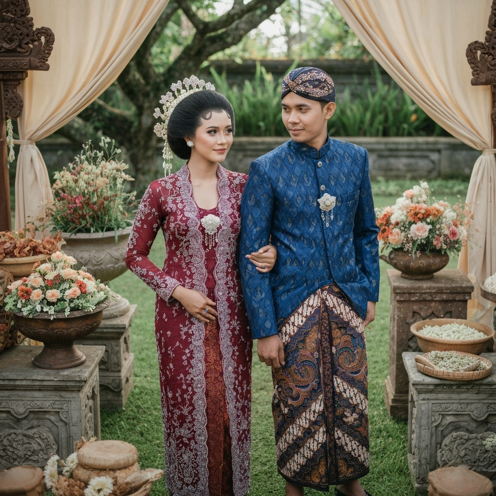
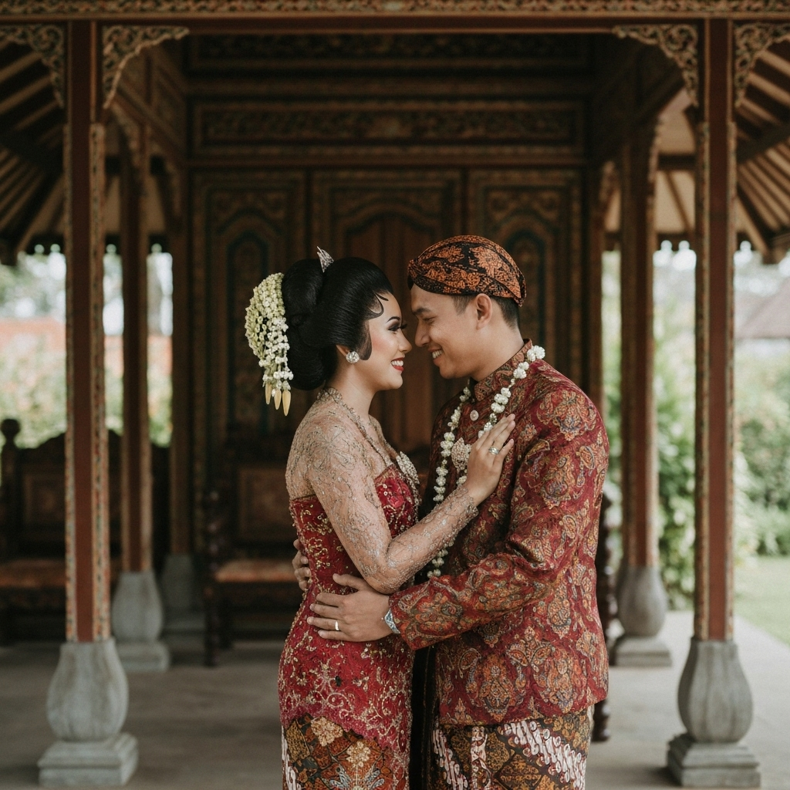
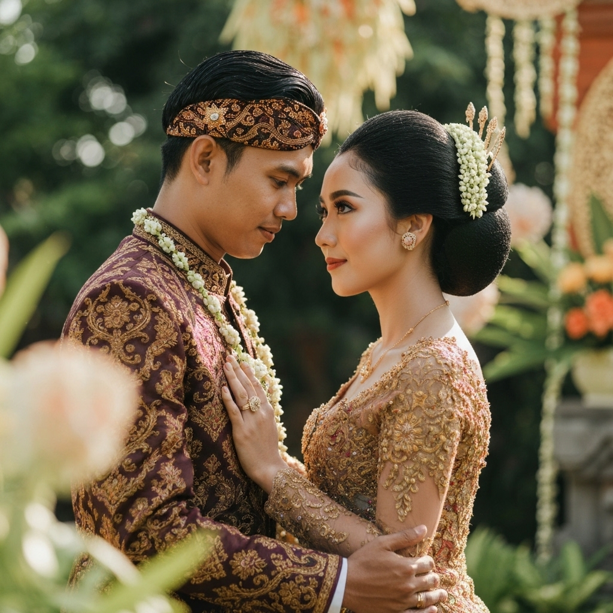
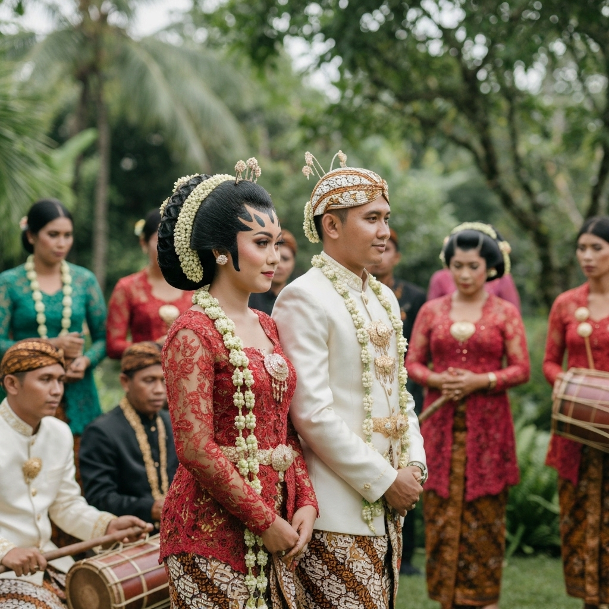
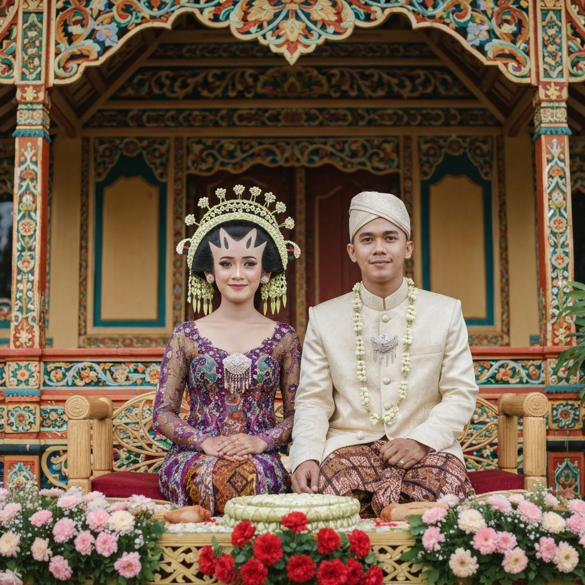
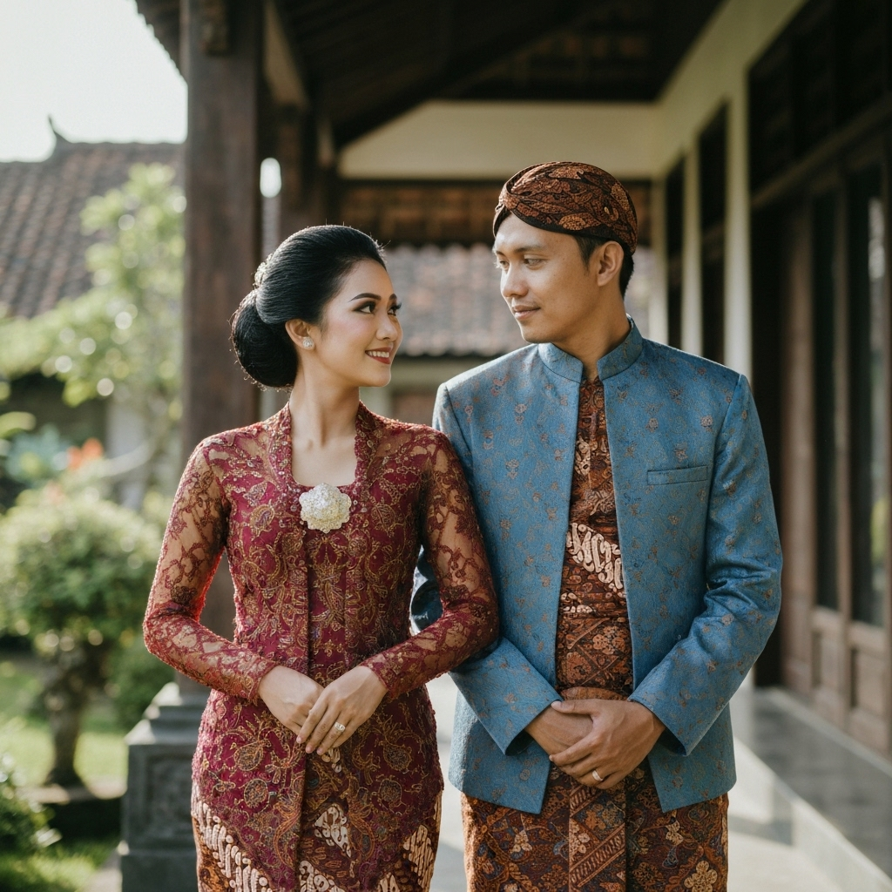

وَمِنْ اٰيٰتِهٖٓ اَنْ خَلَقَ لَكُمْ مِّنْ اَنْفُسِكُمْ اَزْوَاجًا لِّتَسْكُنُوْٓا اِلَيْهَا وَجَعَلَ بَيْنَكُمْ مَّوَدَّةً وَّرَحْمَةًۗ اِنَّ فِيْ ذٰلِكَ لَاٰيٰتٍ لِّقَوْمٍ يَّتَفَكَّرُوْنَ
"Dan di antara tanda-tanda kekuasaan-Nya ialah Dia menciptakan untukmu isteri-isteri dari jenismu sendiri, supaya kamu cenderung dan merasa tenteram kepadanya, dan dijadikan-Nya diantaramu rasa kasih dan sayang."
artinya
"Dan di antara tanda-tanda kekuasaan-Nya ialah Dia menciptakan untukmu isteri-isteri dari jenismu sendiri, supaya kamu cenderung dan merasa tenteram kepadanya, dan dijadikan-Nya diantaramu rasa kasih dan sayang."
- QS. Ar-Rum: 21 -
Acara Pernikahan
Akad Nikah
Minggu, 25 Desember 2024
08:00 - 10:00 WIB
Masjid Al-Ikhlas, Yogyakarta
Resepsi
Minggu, 25 Desember 2024
11:00 - 15:00 WIB
Gedung Serbaguna Taman Siswa, Yogyakarta
Menuju Hari Bahagia
00
Hari
00
Jam
00
Menit
00
Detik
Galeri Foto






Konfirmasi Kehadiran
Kehadiran dan doa restu Anda merupakan kebahagiaan bagi kami
Kirim Hadiah
Kehadiran Anda sudah menjadi hadiah terindah bagi kami. Namun jika berkenan, Anda juga bisa memberikan tanda kasih melalui rekening berikut:
Bank BCA
No. Rekening: 1234567890
a.n. Arya Wijaya
Bank Mandiri
No. Rekening: 9876543210
a.n. Sari Dewi
Terima Kasih
Merupakan suatu kebahagiaan dan kehormatan bagi kami, apabila Bapak/Ibu/Saudara/i berkenan hadir untuk memberikan doa restu kepada kami.
Wassalamu'alaikum Wr. Wb.
Arya & Sari